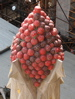
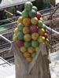
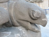

年轮-归档
一盏灯 一座城 找一人
-

生活是一段奇妙的旅行，就在那一去无返的火车上。与那些新人和旧人们共同经历吧!也许这就是一个人无法抗拒的命运，有你、有我、也有他。
-

如果可以，我真想和你一直旅行。或许是某个未开发的荒凉小岛，或许是某座闻名遐迩的文化古城。我们可以沿途用镜头记录彼此的笑脸，和属于我们的风景。一起吃早餐，午餐，晚餐。或许吃得不好，可是却依旧为对方擦去嘴角的油渍。风景如何，其实并不重要。重要的是，你在我的身边。
-

人生就像是一场旅行，遇到的既有感人的，也有伤心的，既有令人兴奋的，也有令人灰心的，既有美妙的风景，也会有称不上景、只有风的地方。人生就是要感受美丽的、善良的，丑恶的、病态的。而只有在充满了艰辛的人生旅途中，始终调整好自己观风景的心态，才能做到人在旅途，感悟人生，享受人生
-
人生就是一次充满未知的旅行，在乎的是沿途的风景，在乎的是看风景的心情，旅行不会因为美丽的风景终止。走过的路成为背后的风景，不能回头不能停留，若此刻停留，将会错过更好的风景，保持一份平和，保持一份清醒。享受每一刻的感觉，欣赏每一处的风景，这就是人生。
-

躲在墙角、掩藏那孤独而又不奢怜悯的伤…
-

幸福就是重复。每天跟自己喜欢的人一起，通电话，旅行，重复一个承诺和梦想，听他第二十八次提起童年往事，每年的同一天和他庆祝生日，每年的情人节、圣诞节、除夕，也和他共度。甚至连吵架也是重复的，为了一些琐事吵架，然后冷战，疯狂思念对方，最后和好。
-

对于旅行，从来都记忆模糊。记不得都去了哪些地方，看了哪些风景，遇到哪些人。尽管同学说，去旅行不在于记忆，而在于当时的那份心情。可是旅行的彼时那刻我的心情一直是好的吗?一直有记日记的习惯，可是，旅行回来，都懒得写日记来记录，可见内心底对旅行是多么的淡漠。